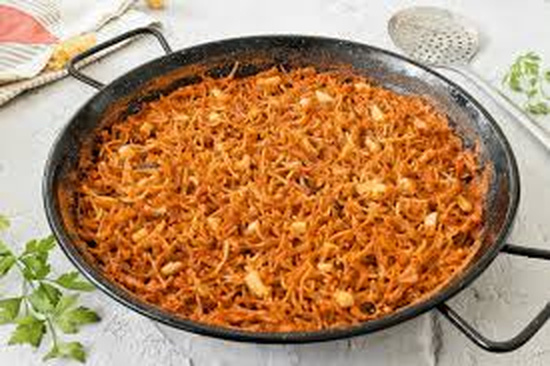
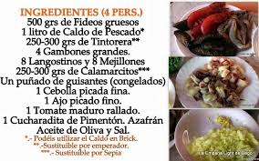
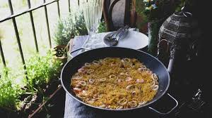
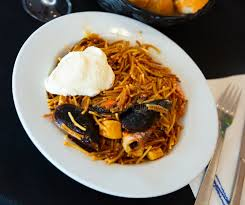

Fideuá
La fideuá es uno de los platos más reconocibles de la cocina mediterránea levantina, una receta marinera muy apreciada por su sabor intenso y por el uso de fideos cocinados en un caldo lleno de matices.

Una receta de tradición marinera
La fideuá se asocia especialmente a la costa valenciana y a la cocina de tradición pesquera. Aunque su elaboración recuerda visualmente a la paella, en este caso el protagonismo recae en el fideo, que absorbe el caldo y concentra el sabor del conjunto.
En muchas versiones tradicionales se emplean pescados, mariscos y sofritos que aportan profundidad al plato. La elección del caldo, el punto de cocción de la pasta y la distribución homogénea de los ingredientes son aspectos fundamentales para obtener una fideuá equilibrada y sabrosa.
Con el tiempo, esta receta ha pasado de ser una preparación popular del litoral a convertirse en uno de los platos más valorados de la gastronomía mediterránea. Hoy sigue siendo habitual tanto en celebraciones como en cartas de restaurantes especializados en cocina marinera.
Galería de imágenes


